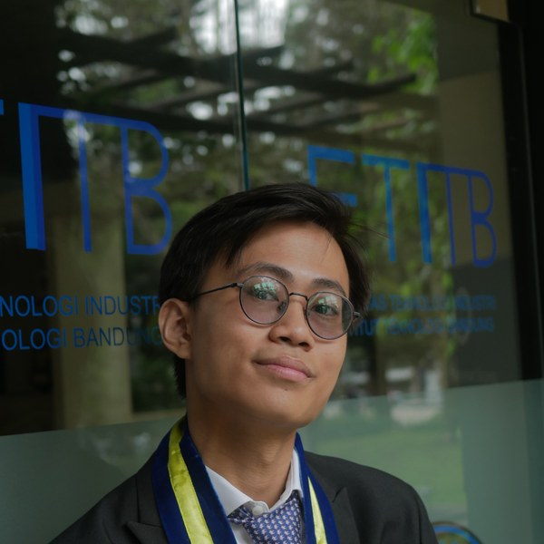
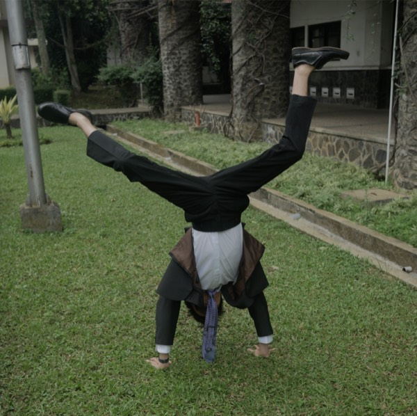
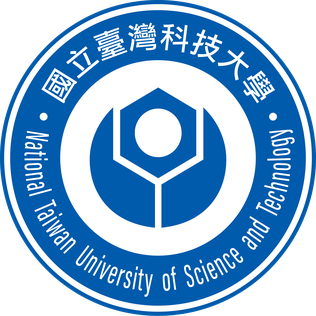

W

Wilfried Ariel Mulyawan 陳順福
PhD Student · NTU CCDS x Nanyang Business School · GIFTS Lab
I build AI systems at the intersection of quantitative finance, DeFi, and economic modeling. PhD student at NTU CCDS x Nanyang Business School · GIFTS Lab.
Publications
Seeing Culture: A Benchmark for Visual Reasoning and Grounding
Designing LQ45 Stock Trading Strategies with Machine Learning
Experience
SMU'">
AI Research Engineer · Singapore Management University
VLMs · Cultural AI · ASEAN Benchmarks · 2025

NTUST'">Research Intern · NTUST CITI Lab, Taipei
Demand forecasting · Smart home systems · 2023
Lab Assistant · ITB Innovation Lab
ML trading systems · LQ45 thesis · 2023–2024
Lab Assistant · ITB Physics Lab
Physics experiments · Teaching · Grading · 2021
Recent
May 2026
PhD offer accepted 🎓 Joining GIFTS Lab, NTU · Advised by Prof. Will Cong (previously Cornell) and Prof. Gao Cong.
Feb 2026
Managing Director at prediction market fund — 7-fig USD volume.
Nov 2025
Seeing Culture presented at EMNLP 2025 Main Conference.
Aug 2023
IISMA Awardee — 1 of 14 selected from 12,000+ applicants.